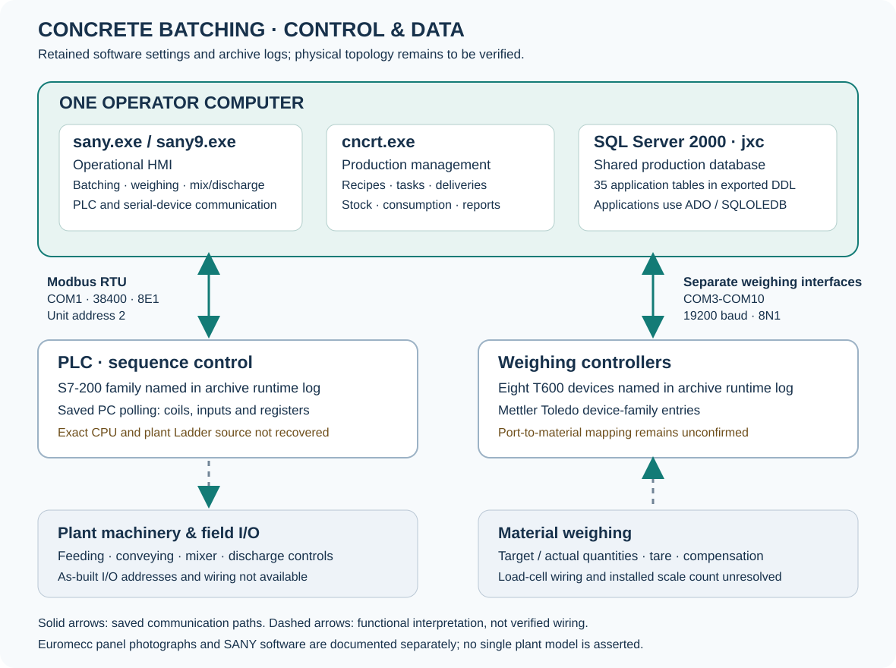

Industrial Automation · Concrete Batching · PLC
Industrial Automation & PLC-Based Control Systems
Central concrete batching plant with a PC-based SANY operator HMI, PLC control over Modbus RTU, serial weighing interfaces and SQL Server production management.
Implemented Project
One workstation, two applications and the PLC
The retained system uses one computer for the SANY operational HMI, the production-management application and the SQL Server database. The operational application has a saved Modbus RTU connection to the PLC and separate serial interfaces for weighing devices.

- Scope
- Integrated batching, weighing, mixing and discharge, with a PC-based operator interface and production records.
- Software
- SANY operational HMI and cncrt.exe production management share the jxc SQL Server database on one computer.
- Communications
- Saved Modbus RTU link to the PLC and separate serial weighing interfaces. Archive logs identify S7-200 and T600 device families; exact CPU and field I/O mapping remain unconfirmed.
Operator control and production management
| Component | Function |
|---|---|
sany.exe / sany9.exe
|
PC-based operational HMI: batch settings, automatic/manual selection, weighing adjustments, mixing and discharge controls. |
cncrt.exe
|
Recipes, production tasks, orders, deliveries, material consumption, stock and daily/monthly reports. |
SQL Server 2000 · jxc
|
Shared production database accessed through ADO/SQLOLEDB. The exported schema contains 35 application tables. |
| PC-to-PLC link | Saved Modbus RTU configuration: COM1, 38400 baud, 8E1, unit address 2. The application polls coils, discrete inputs and registers. |
| Weighing interfaces | Eight configured serial ports, COM3–COM10, at 19200 baud, 8N1. Physical material/channel assignments remain unresolved. |
The retained interface is a desktop application rather than a verified separate modern HMI panel. An archived Controx2000 runtime log names one Siemens S7-200 device and eight Mettler Toledo T600 devices. The exact PLC CPU, recovered plant program and the relationship between that Controx installation and the SANY production front end remain unconfirmed.
From recipe to production record
- Select production requirements. Recipes and tasks define material targets, batch quantity and delivery requirements.
- Prepare dosing and weighing. Operator controls expose tare, target quantity, cycle count, coarse-feed and in-flight compensation settings.
- Coordinate plant equipment. The operational HMI exchanges commands and status with the PLC while separate serial interfaces provide weighing-device communication.
- Mix and discharge. The available controls include mixing timers, automatic/manual selection, charge/discharge pause and discharge inhibition.
- Record and review. The database stores planned and actual material quantities, batches, deliveries, weighing settings, alarms and activity records.
This is a functional reconstruction from operator controls and data records. A complete Ladder state machine, verified interlock matrix and safety circuit have not been recovered.
Weighing and material records
The application distinguishes cement, fly ash, mineral powder, powder additive, liquid additives, aggregate fractions, sand and water. Its records connect recipe targets to actual batch quantities; tolerance and fall settings support weighing adjustment and compensation for material still in transit after feeding stops.
| Tables | Purpose |
|---|---|
recipe, manufacture
|
Recipe targets and planned-versus-actual batch quantities. |
Task, Orders, OrderDetail, OutMaster
|
Production tasks, orders and deliveries. |
exactitude, fall, adjcfg
|
Weighing tolerances, in-flight compensation and mix-ratio adjustments. |
Alarm, LogInfo
|
Alarm and activity records. |
Plant records and remaining engineering details
The physical control-panel photographs carry EUROMECC branding, while the retained PC applications are SANY. Bin and silo counts also differ between the photographed panel and the software mimic. The archive contains HZS60-family material and a station entry with HZS120 text; these are retained as separate observations rather than a verified model or capacity for the installed plant.
STEP 7-MicroWIN was present in the archived workstation environment. The plant Ladder project, exact CPU/order number, I/O list, terminal schedule, electrical drawings, load-cell count, drive models and original plant Controx project have not been recovered.
Read the engineering record and source boundaries →
The project remains implemented industrial work. Later archive analysis and generic teaching diagrams are identified separately from original source code and verified as-built records.
Visual documentation
The original poster and cropped source images remain available. The new architecture above follows the retained software records. Older I/O, Ladder and Ethernet diagrams are general engineering examples, with no claim that their exact brands, addresses or wiring were installed.


General engineering illustrations


Project resources
- Technical repository and project overview
- Engineering record: recorded findings and unresolved details
- Project description for professional profiles
- LinkedIn project record
This public case study uses sanitized technical summaries. Industrial binaries, full databases, customer/order rows and account data are not distributed.